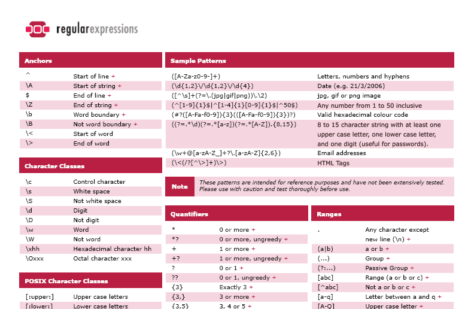
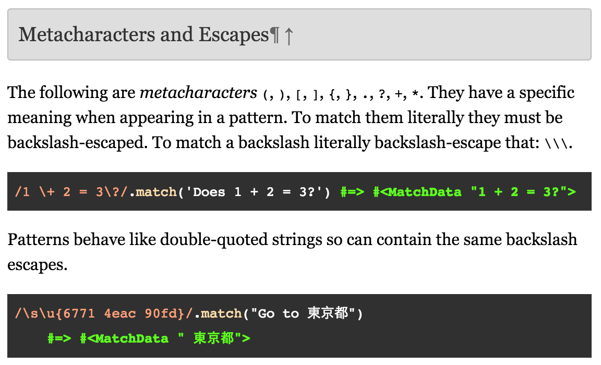

Journey Through Dev Bootcamp
What is RegEx?
FJ Collins Jr. - February 21st, 2016
Throughout the past 8 weeks, I have come to hear and see the words 'regular expressions,' but never knew exactly what they were or meant. As beginners, we were told to stay away for now and the complexity of regular expressions or RegEx (RegExp) would be define when we were on-site at DBC. In Ruby and JS, it seemed that RegEx provided powerful shortcuts for refactored code using symbols and special characters. Let's dig in a little deeper and try to unravel some of its mysteries to beginning software engineers.
What is RegEx?
RegEx is an object within a language that describes a pattern of characters and its mostly used for patterns within strings or a "find-and-replace" method. Much like your Ctrl-F function when you're sifting through a web-page or a document looking for specific words. At first glance at a RegEx, you might not understand what or how it works - \b[A-Z0-9._%+-]++@[A-Z0-9.-]+\.[A-Z]{2,6}\b - but each character within that sequence has a purpose. Let's take a look:
\b- This anchor is allowing us to assert position at a word boundary. Anchors do not match any characters. They match a position.^matches at the start of the string, and$matches at the end of the string.\bmatches at a word boundary. A word boundary is a position between a character that can be matched by\wand a character that cannot be matched by\w.\balso matches at the start and/or end of the string if the first and/or last characters in the string are word characters.\Bmatches at every position where\bcannot match.[A-Z0-9._%+-]- This is telling the machine to match a single character out of the list: one of the characters "._%+-", or in the range between A and Z, or in the range between 0 and 9++- Between one and unlimited times, as many times as possible, without giving back (possessive)@- We want to match the character "@" literally[A-Z0-9.-]- We've seen this before, match a single character out of the list: one of the characters ".-", or in the range between A and Z, or in the range between 0 and 9+- Between one and unlimited times, as many times as possible, giving back as needed (greedy)\.- We want to match the character "." literally (The backslash is needed since "." is a predefined character meaning something different)[A-Z]- Very similar to previous code, match a single character in the range between A and Z{2,6}- Between 2 and 6 times, as many times as possible, giving back as needed (greedy)\b- Close out the expression and assert position at a word boundary
Basically, a regular expression is a pattern describing a certain amount of text. That makes them ideally suited for searching, text processing and data validation. Searching with regular expressions enables you to get results with just one search instead of many searches. The benefit of using regular expressions to update data is that with a single RegEx pattern, you can dynamically update a variety of data.
Special Characters
I mentioned before that a backslash was needed to search through and find all the "." because it was a special character. What does that mean?
Twelve characters have special meanings in regular expressions: the backslash \, the caret ^, the dollar sign $, the period or dot ., the vertical bar or pipe symbol |, the question mark ?, the asterisk or star *, the plus sign +, the opening parenthesis (, the closing parenthesis ), the opening square bracket [, and the opening curly brace {. These special characters are often called "metacharacters".
Therefore, since they have a different meaning to a program, if we need to reference them without their special meaning, we need a backslash in front of them. A \ tells the machine that the next character is it's literal function. If you wanted to input a RegEx such as 3+3=0, you would need to type it as 3\+3=0.
This is just a basic outline of what RegEx can do and how they operate. I look forward to understanding the true power behind RegEx and begin using them myself.
Additional Resources
I hope you all enjoyed this post as it is one of many on my journey to become a software engineer. Please comment and ask any questions that arise - I will gladly respond. Thank you!